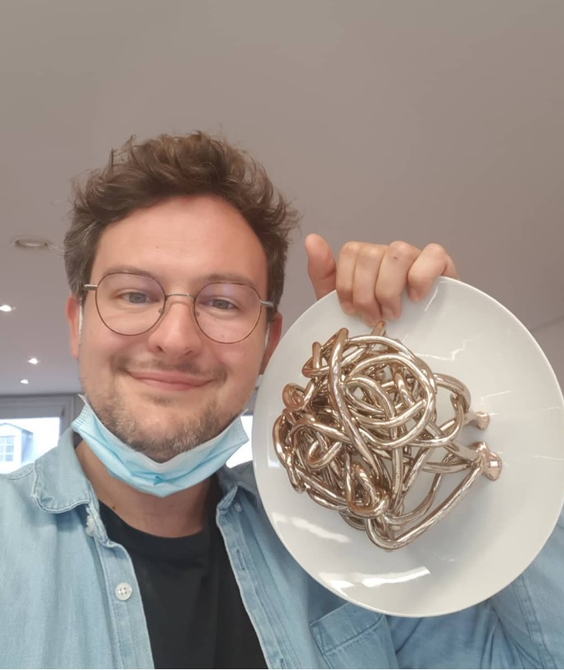

Philippe Ringot
Né en 1981, vit et travaille à Lille, France.
Démarche artistique
Mon travail explore les relations entre le corps, le paysage/environnement et les formes invisibles qui organisent le vivant.
La forme et la matière occupent une place déterminante dans ma démarche. Elles nourrissent mon imaginaire, structurent ma réflexion et orientent mes choix plastiques. Mes recherches portent notamment sur les formes organiques, minérales et végétales liées à la mémoire silencieuse, à la transformation et à la réhabilitation.
Le processus de travail commence par des phases d’observation, de lecture, d’écriture, de croquis et de tests. Il se poursuit par un inventaire des formes offertes par les matériaux — fragments, résidus, éléments composés ou décomposés — dont j’étudie la présence et l’expression propre.
Mon approche s’appuie sur l’expérimentation de différents médiums : céramique, cyanotype, gravure, dessin et peinture. Cette pluralité me permet de faire coexister textures, empreintes, silhouettes et fragments de souvenirs au sein de paysages ou de formes hybrides.
La notion d’offrande occupe aujourd’hui une place importante dans mon travail, qu’elle se manifeste dans mes bouquets en ombres ou dans mes silhouettes représentées de dos. Ces figures, volontairement réduites ou floues, expriment une posture d’attention, de retrait et de disponibilité envers l’espace ou le paysage.
Tout est Offrande en art !
L’œuvre est envisagée comme un espace de réflexion, de contemplation ou de mise en mouvement, à la fois pour moi et pour le regardeur. Elle s’inscrit dans un ensemble de gestes où mémoire, matière et forme contribuent à questionner les liens entre le vivant, le minéral et le temps.
Philippe Ringot, 2026
« …C’est que les artistes ont ce pouvoir de rendre de la valeur à des choses qui sans cela n’en n’auraient plus. Certaines des formes prises au piège de la céramique et des tableaux de Philippe RINGOT évoquent, pour qui sait les voir, quelque chose de ces cicatrices magnifiées par l’art. La légèreté de ces formes arachnéennes acéphales qui semblent tout droit s’échapper du four de cuisson de la céramique nous rappelle aussi que dans ce processus de rétablissement, dans la nature, la liberté peut prendre toutes les formes et que le fatalisme n’y est pas de mise… »